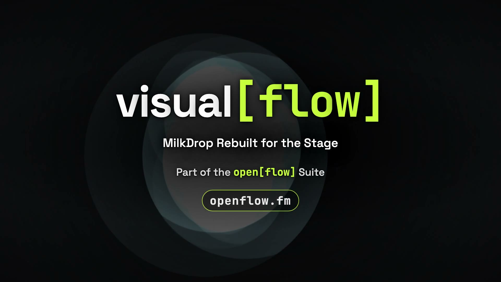

Now on GitHub
visual[flow]
A VJ rig that follows your set

 open[flow]
open[flow]
open[flow] — tools for the way you play
Now on GitHub The first app in the suite
MilkDrop, rebuilt native for the stage. 9,744 community presets drawn on the GPU, in time with your music and anything on Ableton Link.
open[flow] is a family of music tools. set[flow] and visual[flow] work with Ableton Live through a shared bridge. mix[flow] separates and plays audio locally, on its own.
Read the user guide ↗